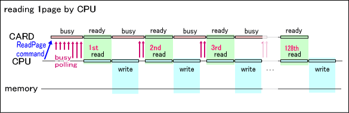
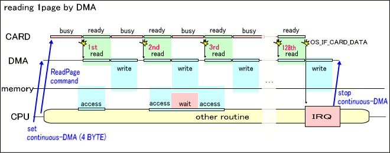

ROM Access (Overview)
Description
By issuing a command through the data bus, the ROM device can transfer data to open memory space.
The command format for data transfer and device operation after the command is issued through the ROM device is as follows.
- The transfer size for a single command is usually 512 Bytes. Also, the starting address of the ROM device region to specify as the transfer source must be aligned in integral multiples of 512 bytes.
- Immediately after issuing the command, the ROM device enters a busy state for a fixed interval and is can then read the first word (4 bytes). This change in states can be checked with the IO register flag, and the timing can be set in the DMA execution cause.
- When one word is read from the IO register, the ROM device enters a busy state again and after a fixed interval, it transitions to a state in which it can read the next word. After repeating this read from the IO register a total of 128 times to complete a transfer of 512 bytes of data, the interrupt request flag OS_IE_CARD_DATA is issued, indicating the transmission is complete.
- The length of each busy period depends on the type of ROM device.
Because these series of processes are executed in CARD Library functions, the application never directly performs this operation.
Also, because the restrictions on transfer size are determined within the library, there is usually no need to take it into consideration.
Data transfer by the CPU
This section describes the normal data transfer processes.

After the data transfer command is issued, the IO register flag is repeatedly checked until the busy state of the ROM device is released. Once the ROM device is no longer in a busy state, 4 bytes are read from the IO register and written to the destination memory.
This pattern of waiting for the busy state to be released and then reading 4 bytes is repeatedly executed until the total reaches 512 bytes.
Usual data transfers are realized in this way through CPU processes.
Data transfer by DMA
This section describes the data transfer processes using DMA transfer.

Before the data transfer command executes, the CARD library runs the DMA channel using the following settings.
- DMA run mode: Card transfer
- Transfer source address: IO register
- Transfer destination address: Data storage destination memory
- Transfer bit width: 32 bit
- Word count: 1 word
Afterward, when the data transfer command is issued, a single DMA transfer is periodically generated each time the ROM device is released from the busy state.
After 512 Bytes of data is transferred, an interrupt is issued and the CARD library stops DMA within the interrupt handler.
When DMA is used in this way, CPU processes can be performed in parallel during data transfer. The only time the completion of DMA transfer will be delayed is the short instant when the timing of CPU memory access and DMA transfer conflict. But, this is less frequent where function of the CPU memory cache is valid.
However, if you look at the necessary time for data transfer, compared to normal transfers by CPU operation, only the interrupt handler portion is longer.
Selection of CPU operation or DMA transfer.
The CARD library executes data transfer with the CARD_ReadRom function or the CARD_ReadRomAsync function. If the DMA channel given to these functions as an argument is valid, DMA transfer is selected. If not, CPU operation is selected. The following are advantages and disadvantages of using DMA transfer instead of CPU operation.
| Features | CPU Operation | DMA Transfer |
| Time needed from transfer start to finish. | Å| | Longer than CPU operation only by the interrupt handler portion. |
| CPU parallel processing during transfer. | Impossible. | Possible (except when there is conflicting memory access). |
Based on these points, we can see that DMA transfer is the better choice, except when data transfer must run in parallel. An example of normal data transfer use is a data pre-fetch operation during a game. An example of parallel data transfer use is reading a large amount of data when initializing a game.
However, even if a DMA transfer is specified, CPU operation will be selected if all the conditions (transfer source, transfer destination, transfer size) for using a DMA transfer are not satisfied. This is determined automatically within the CARD library. When using the file system in the high-level library, there are more cases when the conditions to make DMA transfer possible will not be satisfied. In order to make valid use of DMA transfer, you must carefully design data organization and the program on the application side. For specific cautions, refer to documentation on the CARD_ReadRomAsync function.
See Also
CARD Function List
Revision History
01/06/2006 Initial version.
CONFIDENTIAL